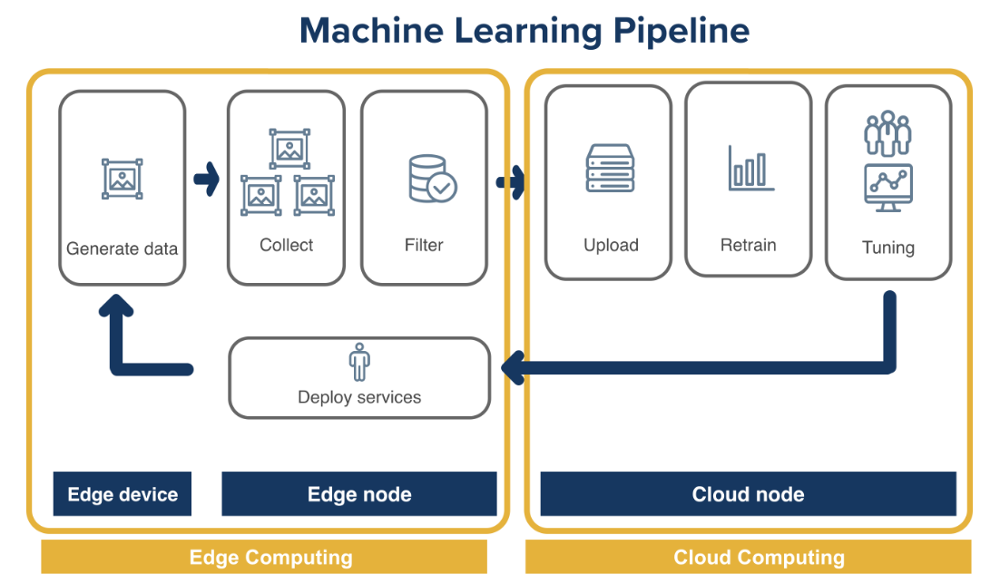
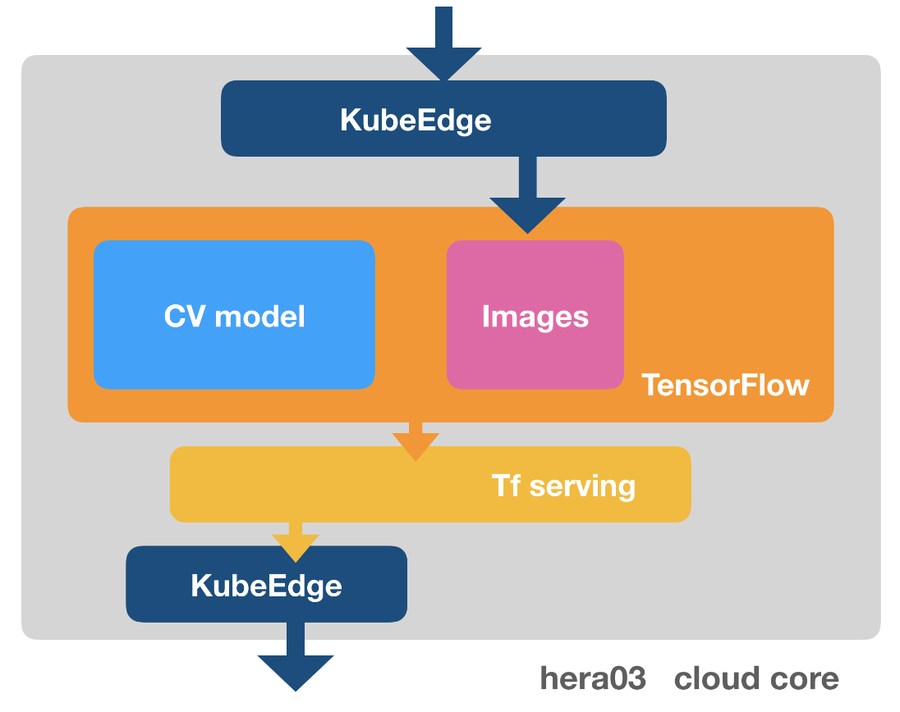
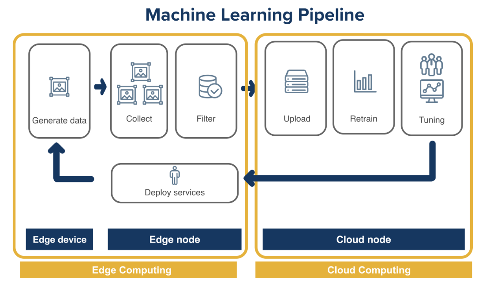
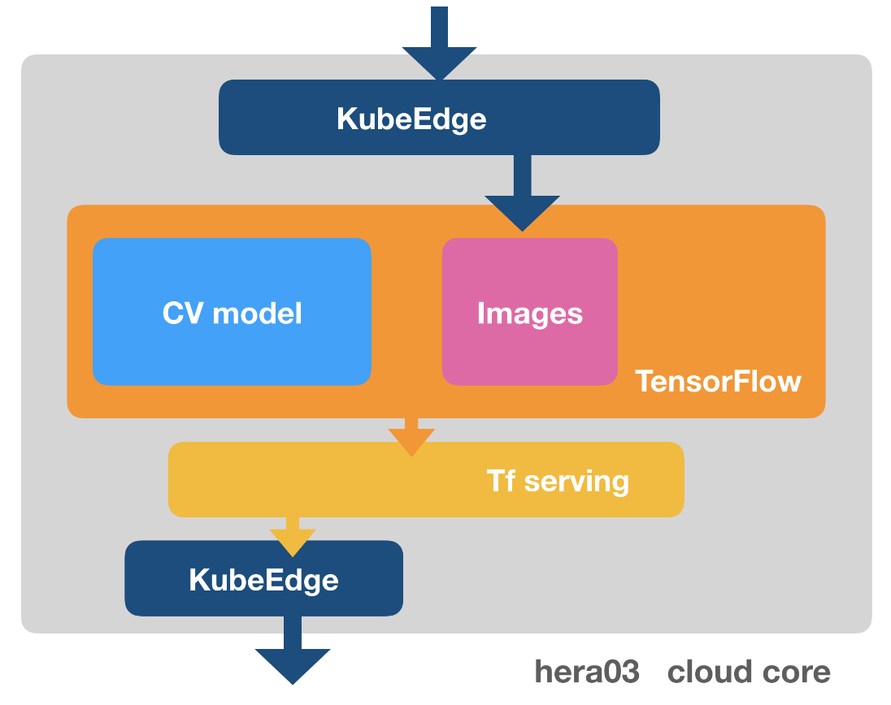
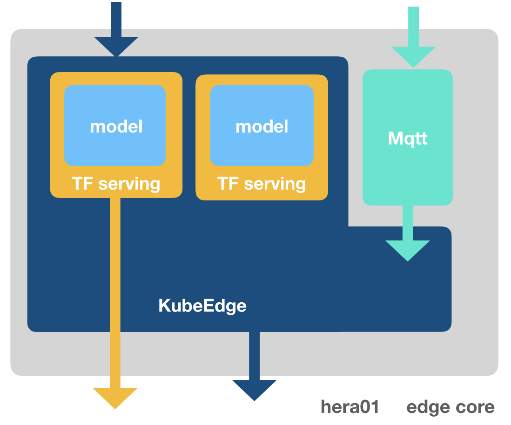
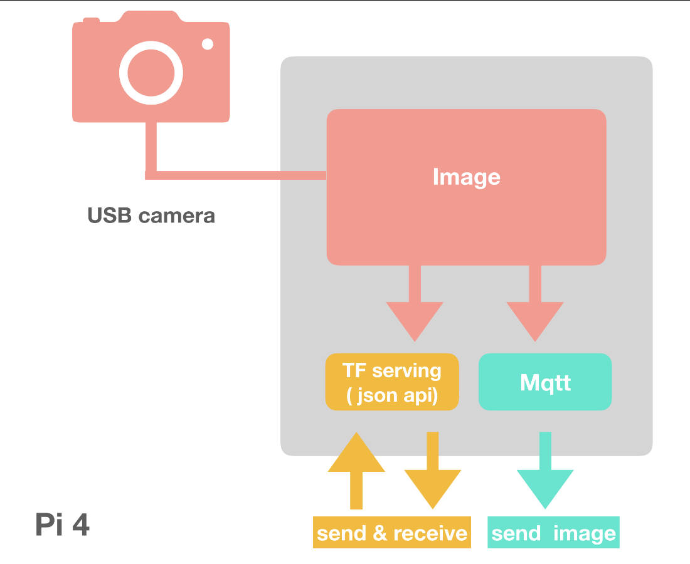
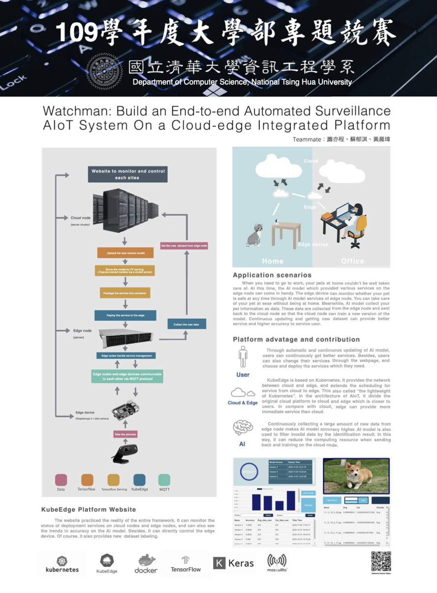

Build an end-to-end Automatic Surveillance AIoT System On a Cloud-edge Integrated Platform
- Build an AIoT system that could deploy AI models automatically and continuously from cloud to edge.
- After cloud node continuously receives new data and retrains model to deploy, which forms a Cloud-edge ML Pipeline.
- By Kubernetes cloud orchestration and Docker virtual environment, edge devices could scale without system restrictions.
 



Cloud node ( server cluster )
Train xception model deployment, which can provide cat and dog identification, then use docker container to wrap it into a pod belonging to TF serving and deploy it to Kubernetes, and then use KubeEdge controller to deploy the pod on the cloud to the edge.
Edge node ( server )
Get the pods deployed from the cloud through KubeEdge controller, provide the service of cat and dog identification to the edge device, and collect the photos from pi, use the accuracy rate of identification to measure whether the data is valid, and send the valid data back to the cloud to provide more data sets for the model.
Edge device ( raspberry pi 4)
The photos are sent to the edge node via mqtt, and then pi uses the TF serving API to send a recognition request to the training model on the edge node to obtain recognition results from the recognition model on the Edge node.
